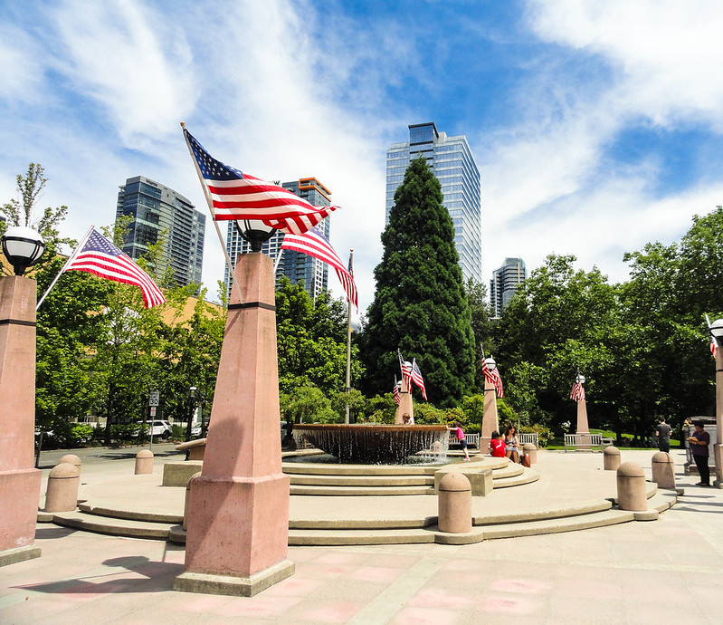
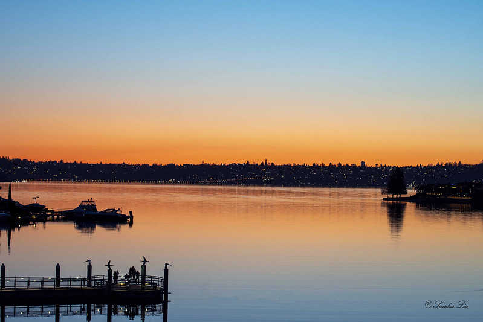
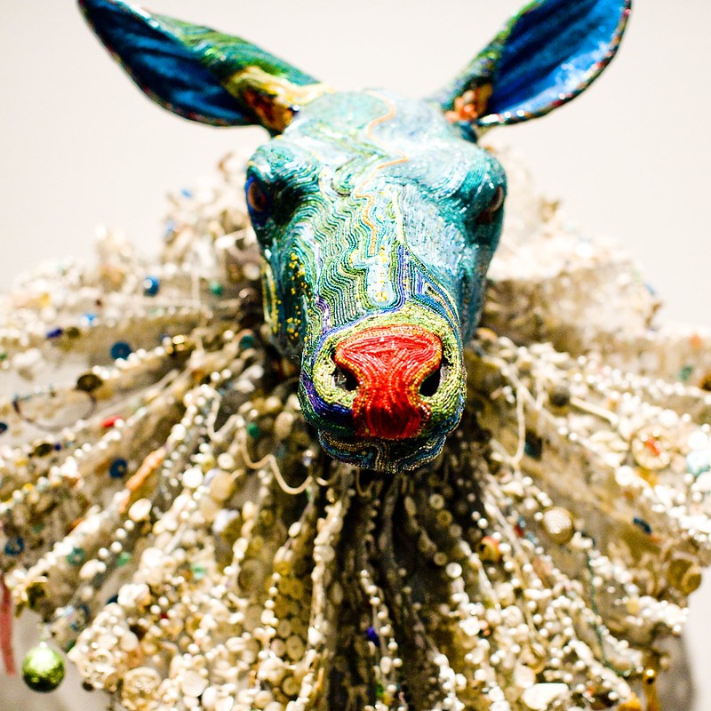

Top Attractions in Bellevue
Bellevue Botanical Garden
The Bellevue Botanical Garden offers 53 acres of cultivated gardens, restored woodlands, and natural wetlands. It’s a paradise for nature and flower lovers!
Visit Bellevue Botanical Garden

'Corona'Flower at Bellevue Botanical Garden by Susan Ford Collins, August 30, 2022 flickr.
Downtown Park
This 21-acre park in downtown Bellevue features a circular promenade, a large open lawn, and a beautiful waterfall. A perfect place to relax and take in the city views.
Visit Downtown Park

Bellevue Downtown Park by Caroline Yong, July 9th, 2018 flickr.
Meydenbauer Bay Park
Located on the waterfront, Meydenbauer Bay Park offers scenic views, beach access, and plenty of family-friendly activities.
Visit Meydenbauer Bay Park

Beauty of Meydenbauer Bay Park by Sandra Liu, March 7,2020 flickr.
Bellevue Arts Museum
Bellevue Arts Museum (BAM) showcases contemporary visual art, craft, and design. It features rotating exhibitions and offers workshops, making it a must-visit for art enthusiasts.
Visit Bellevue Arts Museum

Bellevue Arts Museum by Thomas Hawk July 10,2008 flickr.